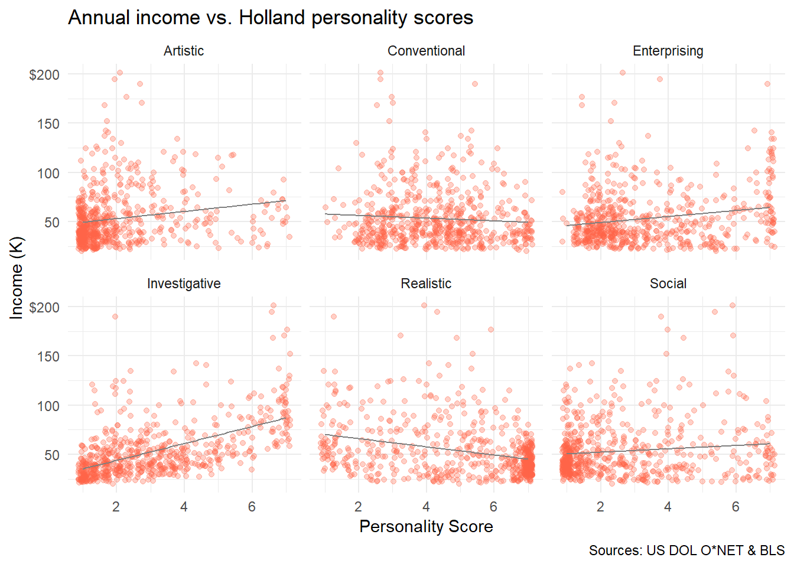
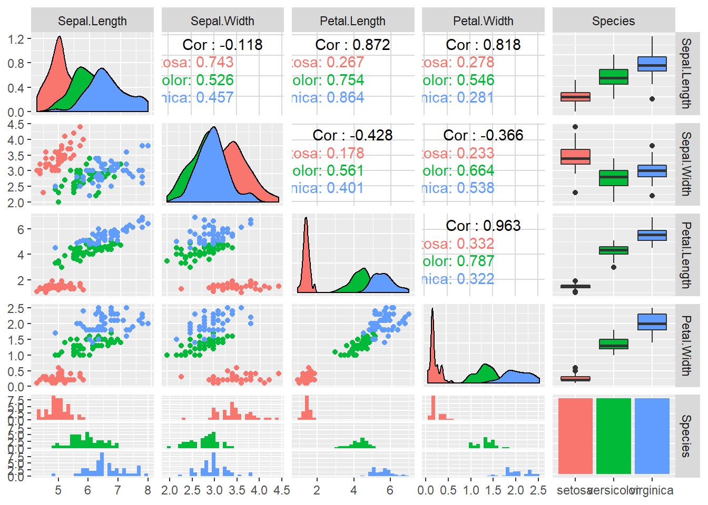
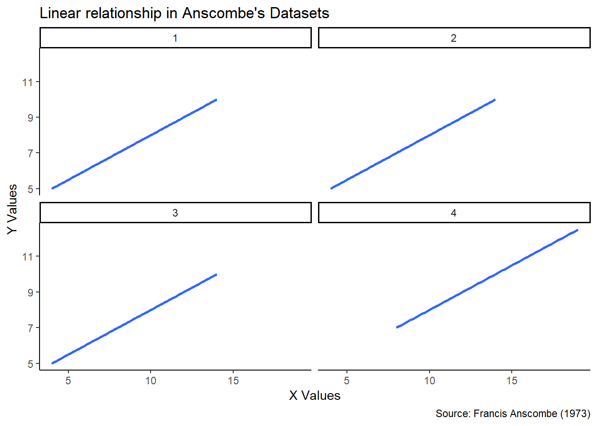
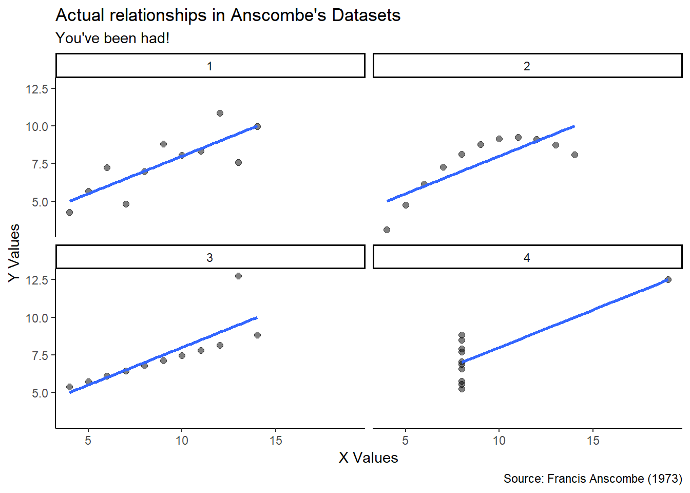

In this chapter, we’ll explore the following key concepts:
Too long; didn’t read? Here’s what you need to know:
We visualize data for two principal reasons. We want to:
Explanatory visualization is polished, publication-quality, and interpretable:
Forget the code. What idea does this plot convey? Can it be misinterpreted?
library(ggplot2)
ggplot(read_csv(url), aes(x = val, y = myr)) +
geom_jitter(alpha = 0.3, color = "tomato") +
geom_smooth(method = "lm", se = FALSE,
color = "grey50", lwd = 0.5, alpha = 0.3) +
facet_wrap(~ elm) +
labs(title = "Annual income vs. Holland personality scores",
x = "Personality Score",
y = "Income (K)",
caption = "Sources: US DOL O*NET & BLS") +
scale_y_continuous(labels = c("0", "50", "100", "150", "$200")) +
theme_minimal()
Exploratory visualization is “quick and dirty” and intends to discover.
This code is manageable! Observe a simple call to ggpairs() and the iris dataset.
library(ggplot2)
library(GGally)
ggpairs(data = iris,
aes(color = Species))
Above, with just a little code, every variable plots against the other.
Hopefully, you wouldn’t publish this. But we can quickly find patterns in a pairs plot:
Such visual eploration can help refine hypotheses before analysis begins!
Exploratory viz is a key component in exploratory data analysis, or EDA.
Failing to visually explore your data can get you in hot water. Let’s try it!
Observe the following data frame containing four data sets.
Variable x1 corresponds to y1, x2 to y2, and so forth:
library(datasets)
anscombe## x1 x2 x3 x4 y1 y2 y3 y4
## 1 10 10 10 8 8.04 9.14 7.46 6.58
## 2 8 8 8 8 6.95 8.14 6.77 5.76
## 3 13 13 13 8 7.58 8.74 12.74 7.71
## 4 9 9 9 8 8.81 8.77 7.11 8.84
## 5 11 11 11 8 8.33 9.26 7.81 8.47
## 6 14 14 14 8 9.96 8.10 8.84 7.04
## 7 6 6 6 8 7.24 6.13 6.08 5.25
## 8 4 4 4 19 4.26 3.10 5.39 12.50
## 9 12 12 12 8 10.84 9.13 8.15 5.56
## 10 7 7 7 8 4.82 7.26 6.42 7.91
## 11 5 5 5 8 5.68 4.74 5.73 6.89At a glance, they look like the have some similaries!
Check It: Let’s perform a few statistical EDA functions on each subset, 1-4.
What do you notice when we figure out and organize:
mean()var()cor()lm()## x_mean y_mean x_var y_var correl coeff
## Set 1 9 7.500909 11 4.127269 0.8164205 0.5000909
## Set 2 9 7.500909 11 4.127629 0.8162365 0.5000000
## Set 3 9 7.500000 11 4.122620 0.8162867 0.4997273
## Set 4 9 7.500909 11 4.123249 0.8165214 0.4999091Heavens to Murgatroyd! These are practically the same sets!
Once visualized, all four linear relationships appear to be exactly the same:

Well, that settles that. Pack it up, folks - the data are the same.
Hold up.
Wait a minute.
Something ain’t right.
Let’s try replotting the actual datasets and not just their linear models.

Boom! Not the same datasets at all.
Despite having the same mean, variance, correlations, and coefficients:
Conclusion: Always conduct exploratory visualization as a staple of any analysis.
FUN FACT:
You just got Anscombe’d. Francis John “Frank” Anscombe was an English statistician who helped pioneer the field in the twentieth century. He wrote:
“…a computer should make both calculations and graphs…”
To demonstrate, Anscombe invented these datasets: Anscombe’s Quartet.